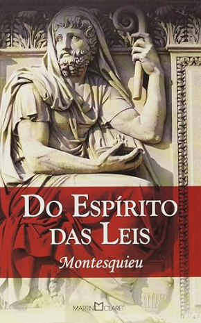
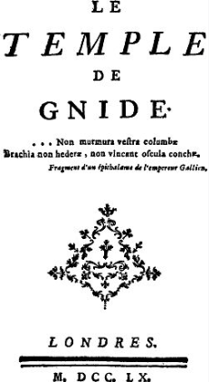

Obras
Do espirito das leis (1748)

Na sua obra-prima ´Do espírito das leis´ Montesquieu elabora conceitos sobre formas de governo e exercícios da autoridade política que se tornaram pontos doutrinários básicos da ciência política. Suas teorias exerceram profunda influência no pensamento político moderno. Elas inspiraram as ´Declarações dos Direitos do Homem e do Cidadão´ elaborada em 1798 durante a Revolução Francesa.
Sua obra mais importante é, sem dúvida, "O Espírito das Leis" (De l'esprit des lois), publicada anonimamente em 1748. Nela, Montesquieu propõe uma análise profunda dos sistemas políticos, da legislação e das instituições sociais. Seu objetivo era compreender como as leis deveriam se adaptar ao clima, à cultura e à economia de cada povo.
Cartas persas (1721)

Cartas Persas (Lettres persanes) é uma compilação de textos do filósofo francês Barão de Montesquieu escritos de 1711 a 1720 e publicados anonimamente em 1721. Obra de sua juventude, é um relato imaginário, sob a forma epistolar, sobre a visita de dois fictícios amigos persas, Rica e Usbeck, a Paris, durante o reinado de Luís XIV. Eles escrevem para seus amigos na Pérsia tudo o que veem lá. Por meio desta narrativa, critica a sociedade, os costumes, as instituições políticas e os abusos da Igreja e do Estado na França e Europa da época.
Espirituoso e irreverente, esse primeiro livro de Montesquieu tem um fundo sério, pois relativiza os valores de uma civilização pela comparação com os de outra muito diferentes. Verdadeiro manual do Iluminismo, foi uma das obras mais lidas no século XVIII.
O Templo de Gnido (1760)

O Templo de Gnido (título original em francês: Le Temple de Gnide) é um poema de sete cantos em prosa publicado sem nome do autor em 1725 por Montesquieu. O propósito do poema, diz o prefácio, é fazer “ver que somos felizes através dos sentimentos do coração e não através dos prazeres dos sentidos. O poema causou escândalo ao ser publicado em Paris no final de março de 1725.
Seu "Prefácio do Tradutor" traz a história fictícia da obra e informava tratar-se de um antigo manuscrito em grego, de autor não identificado, encontrado entre os pertences de um bispo grego. O "tradutor" anônimo informa que a partir desse manuscrito, trazido à França por um embaixador francês no Império Otomano, foi feita a tradução em francês.